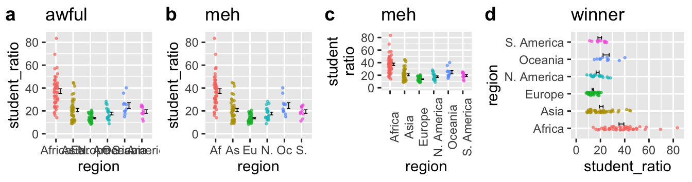
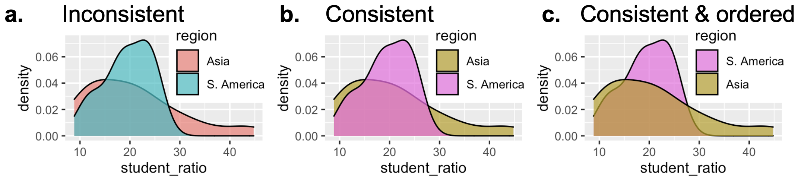
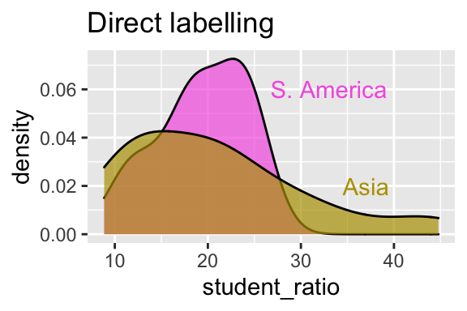
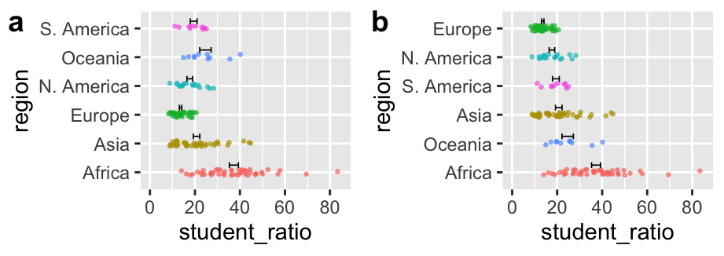

![This multi-panel figure (labeled a–f) presents different ways to visualize outcomes from a Moderna COVID-19 vaccine trial. Panels (a) and (b) show total participant counts in the placebo and mRNA-1273 groups, making it hard to detect differences since most participants didn’t develop COVID. Panel (c) focuses only on those who became infected, displaying a stacked bar plot that emphasizes the lower proportion of severe cases in the vaccine group but omits total infection counts. Panel (d) uses a slope chart to show the drop in both mild and severe cases among vaccinated individuals. Panels (e) and (f) use stacked bar charts to highlight both the overall reduction in cases and the shift toward milder outcomes in the vaccine group. The color legend indicates outcomes: black for severe COVID, light blue for mild COVID, and dark gray (in some panels) for no COVID. Together, these panels demonstrate how different design choices can shape how data are interpreted.](../../figs/summarizing_data/data_viz/modernaplots-1.png)
• 9. Clear plots
Motivating Scenario:
You’re making a figure to share your results—or trying to understand someone else’s—and you want the message to be clear, not confusing or misleading.
Learning Goals: By the end of this subchapter, you should be able to:
- Design plots that highlight key patterns in your data by:
- Making important comparisons visually obvious.
- De-emphasizing irrelevant or distracting elements.
- Use labeling and layout choices to reduce confusion, including:
- Making axes readable.
- Using direct labeling when appropriate.
- Avoiding cluttered legends and ambiguous abbreviations.
Maintain consistency across plots (e.g., colors, category orders) so readers can more easily interpret your figures as a coherent set.
Recognize when plot design may unintentionally mislead, by
- Misusing axis breaks.
- Truncating the y-axis without signaling it.
- Showing too narrow a window and hiding long-term patterns.
- Critique and revise unclear plots whether you or someone else made them.
Good Figures Are Clear
Good plots are clear, with messages that stand out. To achieve clarity in a plot, we need to make labels informative and readable, minimize cognitive burden, make the point obvious, and avoid distractions.
Have Informative and Readable Labels This should go without saying, but make sure that your labels can be read and that readers know what these labels mean. Sometimes labels are unclear because authors simply don’t look at the figures, other times they use shorthand that might be clear to experts or the team working on the project, but not to outsiders or non-experts.
Minimize cognitive burden Two of my favorite books are Crime and Punishment and 100 Years of Solitude. While they’re great stories, I remember struggling when trying to track relationships between characters or remember that Raskolnikov and Rodya are the same person. Scientific communication is not \(19^{th}\) century Russian literature – as science communicators we strive to be consistent and to minimize how much your reader has to keep in their mind.
Make points obvious A scientific figure should tell a story, but it shouldn’t be a mystery or a puzzle. Science is complicated enough, and people who read science are often busy - so the message of a plot should be clear. Readers should use their brains making sense of the implications of scientific findings, not figuring out what the finding is.
Avoid distractions Readers should focus on your story, not on unnecessary visuals or effects.
Clear Plots Highlight Patterns
Good plots do more than “show the data.” They help your reader see what matters, fast. That means intentionally designing plots to make important patterns and comparisons obvious - especially the ones that are central to your scientific story.
Bring Out Key Comparisons
Because data cannot speak, we can’t just “present the data.” Good plots are designed to help readers see and evaluate the patterns central to the story you’re telling. Just like in storytelling, emphasizing the wrong details can distract and mislead. This is important becase the same dataset can tell very different stories depending on how it is plotted. This often means guiding your reader’s eye with color, layout, or label placement.
Figure 1 shows one such example:
Because most people at a given time do not have COVID-19 including the “non-covid” cases makes it hard to see any difference between the placebo and the mRNA vaccine (Figure 1 A-B).
By focusing on the proportion of severe vs. mild COVID cases in the placebo and vaccine group, Figure 1 C shows that vaccinated folks have proportionally fewer cases of extreme COVID among the vaccinated. But it does not provide information about the total number of infections.
Figure 1 D-F show both the reduced number of cases and the lower proportion of severe COVID among vaccinated participants.
Consider How People Process Images
When creating a plot, consider not just the data but how readers will interpret it. You don’t need to be a graphic designer to make a good plot. Try asking a friend what they see in your plot—can they easily spot the pattern or comparison you want to highlight?
Let’s try this by looking at Figure 2 (you be the friend), which like Figure 1 shows different presentations of the same data. As you examine these plots consider which one allows you to best estimate the difference in X and Y.
![Six versions of the same dataset showing values for categories X and Y using different plot types. Panel A uses grouped bar charts with individual subgroups; Panel B highlights only X and Y in color while leaving other bars gray; Panel C shows stacked bar charts; Panel D uses stacked bars with color emphasis on X and Y; Panel E is a stacked bar chart reordered to place X and Y on top; Panel F is a pie chart with colored slices for X and Y. These variations illustrate how different designs affect our ability to compare categories.](../../figs/summarizing_data/data_viz/broman2.png)
Clear Plots Use Informative and Readable Labels
Beyond comparisons, clarity often breaks down when readers can’t read axis labels. Often labels for categorical variables are quite long, potentially running over each other and making them difficult to read. Poor plots like Figure 3 A, pollute the literature, and arise when authors don’t check how their plot labels render. Figure 3 b-d show alternatives:
- b Abbreviates to prevent labels from jumbling into each other. This definitely helps, but now the reader must think for a bit to connect the label to the actual variable.
- c Rotates the labels 90 degrees. This too is helpfull, but we rarely read at this angle.
- d Flips the axes. The last option is my favorite because it is the most natural to read.

Clear Plots Are Consistent
Visual consistency across figures can support storytelling, or undermine it when neglected. In a project with multiple plots, visual consistency helps readers follow your story. Unfortunately, R doesn’t remember color assignments unless you explicitly set them. This becomes a problem when you subset data - for example, plotting just two groups from an earlier plot that included six.
In Figure 4 a, South America and Asia appear in new default colors (blue and red), breaking the visual connection to earlier plots (e.g. Figure 3) where they were purple and brown. This disrupts the reader’s expectations. You can fix this by explicitly assigning colors, as shown in b, or go further and order the legend to match the plot layout, as in c.

Maintaining consistency in color mapping, as shown in Figure @ref(fig-consistent)c, and sorting labels sensibly makes plots even easier to process.
Clear Plots Use Direct Labeling (When Helpful)

Figure 5 improves on Figure Figure 4 C by using direct labeling instead of a legend. Readers no longer need to scan over to the legend, decode which color is which, and then return to the data to interpret what they’re seeing. Instead, the category labels are placed right on the plot, where the data are. This reduces cognitive load, and brings the readers’ attention where it belongs – the data.
Clear Plots Order Categories Sensibly
How you order categorical variables on an axis can dramatically affect a plot’s readability. Be deliberate about how you order categories on the x-axis (when categorical). Here are three guiding principles to help you:
- If the data are ordinal (e.g., months of the year), place them in their natural order.
- For nominal categories order by a meaningful statistic (e.g. decreasing mean or median) to make trends or extremes stand out.
- For many low-frequency categories, consider grouping them into “Other” and placing it last.
Figure 6 compares the default alphabetical order of continents (panel A) with the same plot reordered by the mean student–teacher ratio (panel B). The second version reveals the pattern more clearly and makes it easier to identify the lowest- and highest-ratio regions.

By default, R arranges categories alphabetically. This is rarely what you want. The forcats package gives you tools to arrange categorical variables more sensibly:
fct_relevel()allows you to manually reorder factor levels in a specific order. This is great for ordinal variables like “high”, “medium”, “low”.fct_reorder()allows you to reorder factor levels based on a summary of another variable for when you want nominal categorical variables ordered by means, medians, etc. (as in Figure 6 B).fct_lump_*()allows you to group rare categories in “other”.